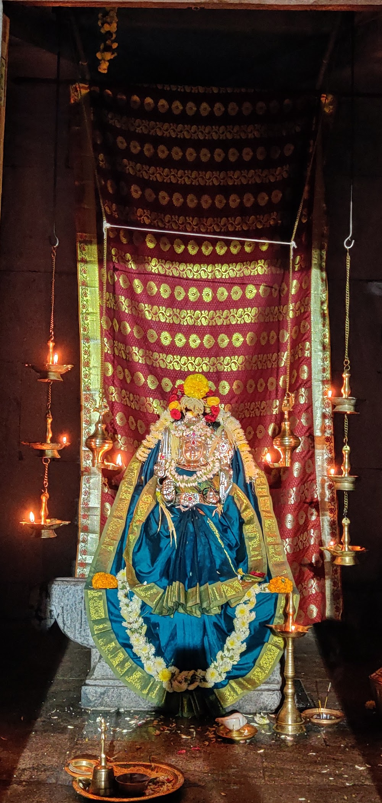

ಓಂ ಶ್ರೀ ವಿಶ್ವಕರ್ಮಣೇ ನಮಃ
Vishwakarma Dhama
ದಕ್ಷಿಣ ಕನ್ನಡ ವಿಶ್ವಬ್ರಾಹ್ಮಣ ಸಂಘ · ವಿಶ್ವಕರ್ಮ ಧಾಮ
A spiritual and community home for the Vishwakarma community in Satellite Town, Yelahanka, Bengaluru, serving devotees and families since the Sangha was registered in 1972.
About the Sangha
Rooted in Dakshina Kannada, at home in Bengaluru
The Dakshina Kannada Vishwa Brahmana Sangha (DKVS) brings together Vishwa Brahmana (Vishwakarma) families from coastal Karnataka who live in and around Bengaluru. It is a registered society under the Karnataka Societies Registration Act, 1960.
Its home, Vishwakarma Dhama, stands on land allotted to the Sangha by the Karnataka Housing Board in Satellite Town, Yelahanka. The land was given so the Sangha could build a Samudaya Bhavana (community hall), run a students' hostel and a school of sculpture. Today all of the Sangha's programmes are held here.
At a glance
- OrganisationDakshina Kannada Vishwa Brahmana Sangha (DKVS)
- EstablishedRegistered 15 May 1972
- RegistrationNo. 50/72-73
- CampusVishwakarma Dhama, CA-21, Sector A, Satellite Town, Yelahanka
- Dedicated toLord Vishwakarma, the divine architect
What happens here
Worship, learning and community
Vishwakarma Dhama is the centre of the Sangha's religious, cultural and educational life.
Vishwakarma Pooje
The Sangha holds Vishwakarma Pooje every year, honouring Lord Vishwakarma, the patron of artisans, architects and craftspeople.
Samudaya Bhavana
A community hall and lawn for weddings, upanayana, naming ceremonies and family functions. Listings mention room for about 300 guests, vegetarian catering, AC rooms and parking.
Education & heritage
The campus was set up to support a students' hostel and a school of sculpture, carrying forward the Vishwakarma tradition of stone, wood and metal craft.
Gallery
Moments at Vishwakarma Dhama
The temple, its festivals and the community that gathers here.

Prarthana
ಓಂ ಶ್ರೀ ವಿಶ್ವಕರ್ಮಣೇ ನಮಃ
Om Shri Vishwakarmane Namaha
We bow to Lord Vishwakarma, the divine architect of the universe, whose blessing guides every artisan's hand. Come for darshan, light a lamp and pray with the community.
Visit us
Plan your visit
Darshan timings
Open daily. Timings may change on festival days. Please call the office to confirm before visiting.
Address
Vishwakarma Dhama, Dakshina Kannada Vishwa Brahmana SanghaCA-21, Sector A, Satellite Town, Yelahanka,
Bengaluru, Karnataka 560064
Contact
- Phone080 2271 4294
- Websitewww.dkvsangha.com
Book the hall
Host your family occasion at Vishwakarma Dhama
To book Vishwakarma Dhama for a function, or to ask about poojas and Sangha membership, please contact the office.